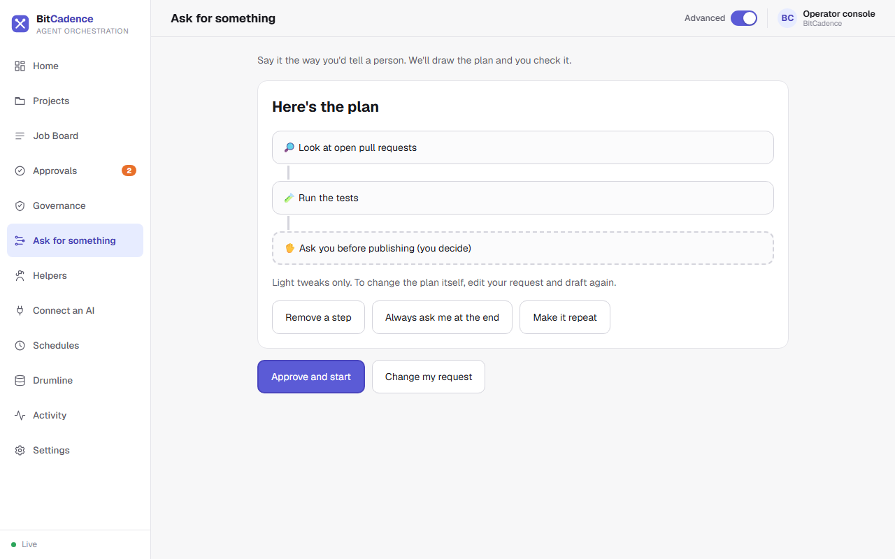
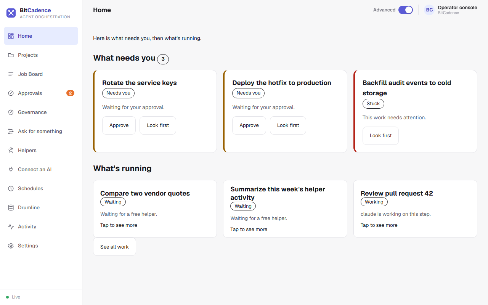

Workflow Files
Goal
Run a multi-step pipeline from a saved YAML workflow file, with each step waiting for the one before it. For most work you don't need a file: say what you want on the Ask for something page and approve the plan it draws. See Ask.
The drag-and-drop workflow builder and the Flow Control page (
/flow) were removed from the console. Ask for something replaced them, and Home shows what is running. A workflow file is still the right tool when you want to keep a pipeline in version control and re-run it.
Step-by-Step Instructions
1. The easy way: Ask
- In the left menu, click Ask for something.
- Type the request the way you'd tell a person, then click Draft a plan.

- Check the steps. Use Remove a step, Always ask me at the end or Make it repeat for light tweaks.
- Click Approve and start. The steps appear on the job board as linked jobs, and Home shows them under What's running.
2. Watching a pipeline
Click Home. Steps that wait on an earlier step show Waiting, a step that needs you shows Needs you with an Approve button, and a step that failed shows up under What needs you.

The CLI Equivalent
A saved pipeline is a YAML file:
# pipeline.yaml
name: release-pipeline
steps:
- id: research
role: claude
title: Research open bugs
instructions: Identify critical bugs targeted for the v2.4 release.
- id: fix
role: codex
title: Implement fixes
instructions: Apply fixes identified in the research step.
depends_on: [research]
- id: ship
role: codex
title: Tag release
instructions: Tag v2.4 release and publish artifacts.
depends_on: [fix]
requires_approval: true
Run the workflow:
mco workflow pipeline.yaml
What You'll See
- Automatic Context Threading (Drumline): When step 2 (
fix) executes, BitCadence automatically prefixes its prompt with the WORKFLOW THREAD block containing the verbatim decisions and files from step 1 (research). No context is lost between different models. - Automatic Gating: When step 3 (
ship) is reached, it automatically stops atneeds_approvaland waits for human sign-off.
If It Goes Wrong
1. "Cyclic dependency detected"
- Cause: Step A depends on Step B, and Step B depends on Step A.
- Fix: Remove the circular reference in the YAML file. Workflows must be strict Directed Acyclic Graphs (DAGs).
2. "Downstream steps fail after upstream failure"
- Cause: By default, dependent steps remain
waitingif an upstream parent fails. - Fix: Open the failed parent job, click Retry, or use
mco retry <parent-id>. Once the parent succeeds, downstream steps unlock automatically.